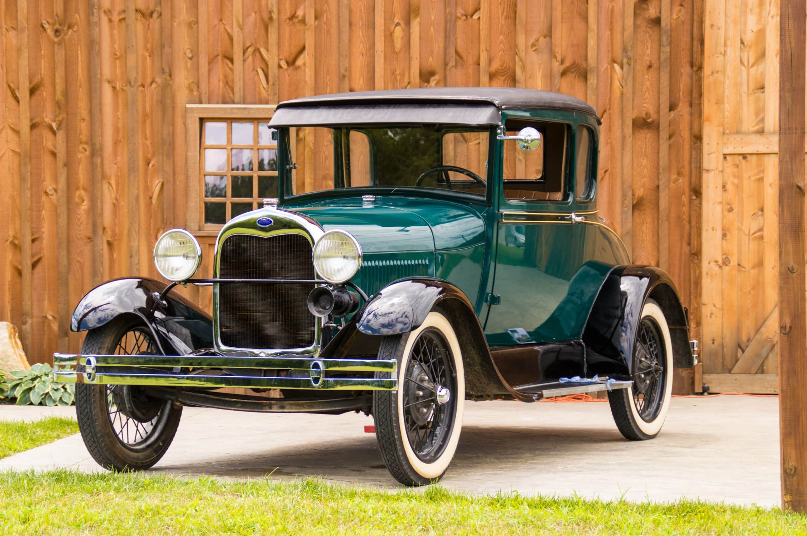
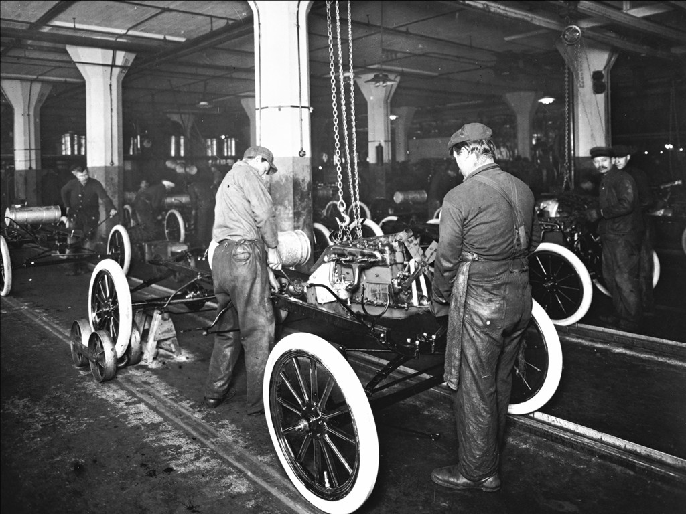
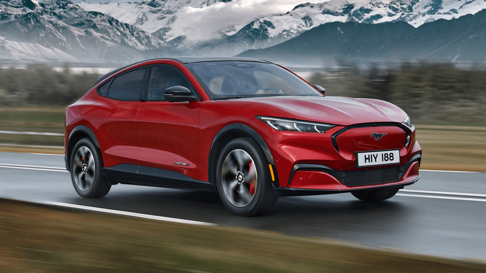

Istoria Ford Motor Company
Începuturile Ford
Ford Motor Company a fost fondată pe 16 iunie 1903 de către Henry Ford și un grup de investitori. Primul model produs a fost Ford Model A, dar adevărata revoluție a venit odată cu Model T în 1908.
Inovații și Producția în Masă
În 1913, Ford a introdus prima linie de asamblare în mișcare, revoluționând industria auto și reducând costurile de producție. Această inovație a permis vânzarea Modelului T la prețuri accesibile pentru clasa de mijloc.
Participarea în Motorsport
Ford are o tradiție bogată în motorsport, de la cursele NASCAR până la celebrul Ford GT, care a câștigat faimoasa cursă de 24 de ore de la Le Mans în 1966, învingându-i pe rivalii de la Ferrari.
Ford Astăzi
Ford continuă să fie un lider global în industria auto, dezvoltând modele electrice moderne, precum Mustang Mach-E și extinzându-se în direcția mobilității sustenabile.
